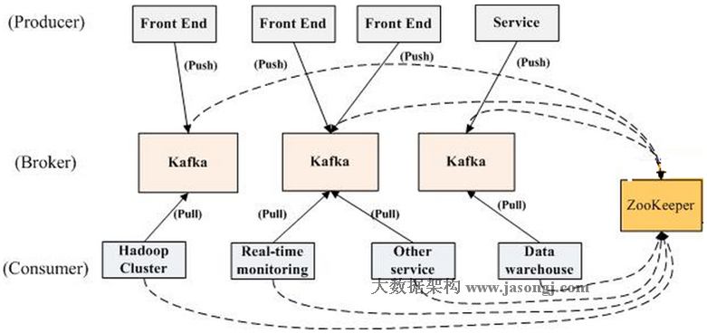
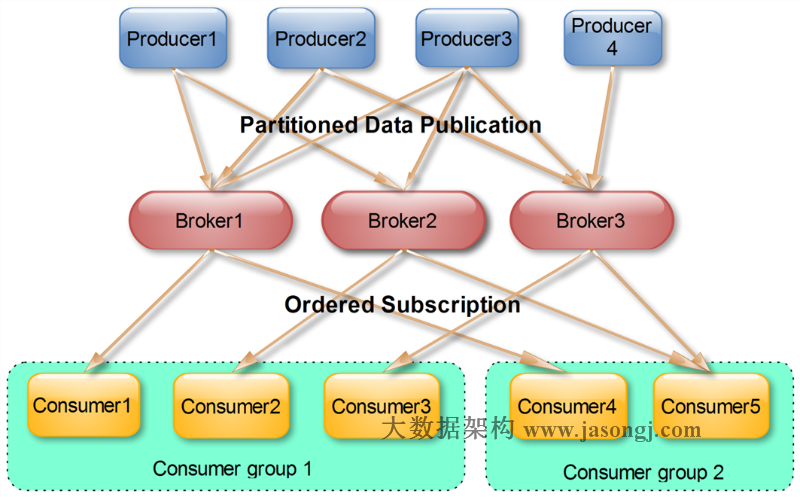
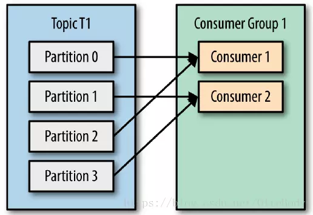
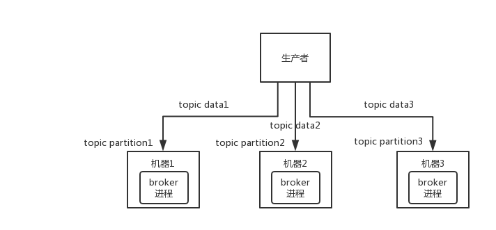
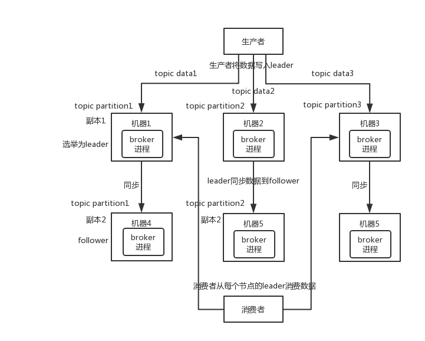
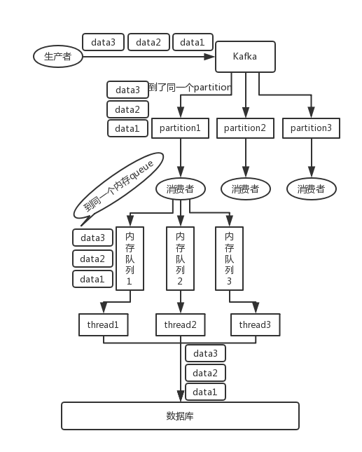

Kafka
术语
- Broker：Kafka 集群包含一个或多个服务器，这种服务器被称为
broker。 - Topic：每条发布到 Kafka 集群的消息都有一个类别，这个类别被称为 Topic。（物理上不同 Topic 的消息分开存储，逻辑上一个 Topic 的消息虽然保存于一个或多个 broker 上，但用户只需指定消息的 Topic 即可生产或消费数据而不必关心数据存于何处）。
- Partition：
Partition是物理上的概念，每个Topic包含一个或多个Partition。 - Producer：负责发布消息到 Kafka broker。
- Consumer：消息消费者，向 Kafka broker 读取消息的客户端。
- Consumer Group：每个
Consumer属于一个特定的Consumer Group（可为每个 Consumer 指定 group name，若不指定 group name 则属于默认的 group）。
拓扑结构

如上图所示，一个典型的 Kafka 集群中包含若干 Producer （可以是web前端产生的Page View，或者是服务器日志，系统CPU、Memory等），若干 broker （Kafka支持水平扩展，一般broker数量越多，集群吞吐率越高），若干 Consumer Group ，以及一个 Zookeeper 集群。 Kafka 通过 Zookeeper 管理集群配置，选举 leader ，以及在 Consumer Group 发生变化时进行 rebalance。 Producer 使用 push 模式将消息发布到broker，Consumer使用pull模式从broker订阅并消费消息。
Topic & Partition
Topic 在逻辑上可以被认为是一个 queue ，每条消费都必须指定它的 Topic ，可以简单理解为必须指明把这条消息放进哪个 queue 里。为了使得 Kafka 的吞吐率可以线性提高，物理上把 Topic 分成一个或多个 Partition ，每个 Partition 在物理上对应一个文件夹，该文件夹下存储这个 Partition 的所有消息和索引文件。若创建 topic1 和 topic2 两个 topic ，且分别有 13 个和 19 个分区，则整个集群上会相应会生成共 32 个文件夹（本文所用集群共8个节点，此处 topic1 和 topic2 replication-factor 均为1）。
Partition 都是通过 顺序读写，所以效率很高
replication-factor 配置 partition 副本数。配置副本之后,每个 partition 都有一个唯一的 leader ，有 0 个或多个 follower 。所有的读写操作都在 leader 上完成，followers 从 leader 消费消息来复制 message，就跟普通的 consumer 消费消息一样。一般情况下 partition 的数量大于等于 broker 的数量，并且所有 partition 的 leader 均匀分布在 broker 上。
对于传统的 MQ 而言，一般会删除已经被消费的消息，而 Kafka 集群会保留所有的消息，无论其被消费与否。当然，因为磁盘限制，不可能永久保留所有数据（实际上也没必要），因此 Kafka 提供两种策略删除旧数据。一是基于时间，二是基于 Partition 文件大小。
Producer 消息路由
Producer 发送消息到 broker 时，会根据 Paritition 机制选择将其存储到哪一个 Partition 。如果 Partition 机制设置合理，所有消息可以均匀分布到不同的 Partition 里，这样就实现了负载均衡。如果一个 Topic 对应一个文件，那这个文件所在的机器I/O将会成为这个 Topic 的性能瓶颈，而有了 Partition 后，不同的消息可以并行写入不同 broker 的不同 Partition 里，极大的提高了吞吐率。
可以在 $KAFKA_HOME/config/server.properties 中通过配置项 num.partitions 来指定新建 Topic 的默认 Partition 数量，也可在创建 Topic 时通过参数指定，同时也可以在 Topic 创建之后通过 Kafka 提供的工具修改。
- 指定了 patition，则直接使用
- 未指定 patition 但指定 key，通过对 key 进行 hash 选出一个 patition
- patition 和 key 都未指定，使用轮询选出一个 patition
Consumer Group

这是 Kafka 用来实现一个 Topic 消息的广播（发给所有的 Consumer ）和单播（发给某一个 Consumer ）的手段。一个 Topic 可以对应多个 Consumer Group 。如果需要实现广播，只要每个 Consumer 有一个独立的 Group 就可以了。要实现单播只要所有的 Consumer 在同一个 Group 里。用 Consumer Group 还可以将 Consumer 进行自由的分组而不需要多次发送消息到不同的 Topic 。
Consumer 个数与 Parition 数有什么关系？
topic 下的一个分区只能被同一个 consumer group 下的一个 consumer 线程来消费，但反之并不成立，即一个 consumer 线程可以消费多个分区的数据。比如 Kafka 提供的 ConsoleConsumer ，默认就只是一个线程来消费所有分区的数据。
即分区数决定了同组消费者个数的上限

所以，如果你的分区数是 N ，那么最好线程数也保持为 N ，这样通常能够达到最大的吞吐量。超过 N 的配置只是浪费系统资源，因为多出的线程不会被分配到任何分区。
- 如果消费线程大于 patition 数量，则有些线程将收不到消息
- 如果 patition 数量大于消费线程数，则有些线程多收到多个 patition 的消息
- 如果一个线程消费多个 patition，则无法保证你收到的消息的顺序，而一个 patition 内的消息是有序的
Push vs. Pull
作为一个消息系统，Kafka 遵循了传统的方式，选择由 Producer 向 broker push 消息并由 Consumer 从 broker pull 消息。事实上，push 模式和 pull 模式各有优劣。
- Push模式 很难适应消费速率不同的消费者，因为消息发送速率是由broker决定的。push模式的目标是尽可能以最快速度传递消息，但是这样很容易造成 Consumer 来不及处理消息，典型的表现就是拒绝服务以及网络拥塞。
- Pull模式 可以根据Consumer的消费能力以适当的速率消费消息。
对于 Kafka 而言，Pull模式 更合适。Pull模式 可简化 broker 的设计，Consumer 可自主控制消费消息的速率，同时 Consumer 可以自己控制消费方式——即可批量消费也可逐条消费，同时还能选择不同的提交方式从而实现不同的传输语义。
高可用性
Kafka 0.8 以前，是没有 HA 机制的，就是任何一个 broker 宕机了，那个 broker 上的 partition 就废了，没法写也没法读，没有什么高可用性可言。
比如说，我们假设创建了一个 topic ，指定其 partition 数量是 3 个，分别在三台机器上。但是，如果第二台机器宕机了，会导致这个 topic 的 1/3 的数据就丢了，因此这个是做不到高可用的。

Kafka 0.8 以后，提供了 HA 机制，就是 replica 副本机制。每个 partition 的数据都会同步到其它机器上，形成自己的多个 replica 副本。所有 replica 会选举一个 leader 出来，那么生产和消费都跟这个 leader 打交道，然后其他 replica 就是 follower 。写的时候， leader 会负责把数据同步到所有 follower 上去，读的时候就直接读 leader 上的数据即可。 Kafka 会均匀地将一个 partition 的所有 replica 分布在不同的机器上，这样才可以提高容错性。

这么搞，就有所谓的高可用性了，因为如果某个 broker 宕机了，没事儿，那个 broker 上面的 partition 在其他机器上都有副本的，如果这上面有某个 partition 的 leader ，那么此时会从 follower 中 重新选举 一个新的 leader 出来，大家继续读写那个新的 leader 即可。这就有所谓的高可用性了。
- 写数据 的时候，生产者就写
leader，然后leader将数据落地写本地磁盘，接着其他follower自己主动从leader来pull数据。一旦所有follower同步好数据了，就会发送ack给leader，leader收到所有follower的ack之后，就会返回写成功的消息给生产者。（当然，这只是其中一种模式，还可以适当调整这个行为） - 消费 的时候，只会从
leader去读，但是 只有当一个消息已经被所有follower都同步成功返回ack的时候，这个消息才会被消费者读到。
消息幂等性
Kafka 实际上有个 offset 的概念，就是每个消息写进去，都有一个 offset ，代表消息的序号，然后 consumer 消费了数据之后，每隔一段时间（定时定期），会把自己消费过的消息的 offset 提交一下，表示“我已经消费过了，下次我要是重启啥的，你就让我继续从上次消费到的 offset 来继续消费吧”。
但是凡事总有意外，比如我们之前生产经常遇到的，就是你有时候重启系统，看你怎么重启了，如果碰到点着急的，直接 kill 进程了，再重启。这会导致 consumer 有些消息处理了，但是没来得及提交 offset ，尴尬了。重启之后，少数消息会再次消费一次。
幂等性，通俗点说，一个数据，或者一个请求，给你重复来多次，你得确保对应的数据是不会改变的，不能出错。其实重复消费不可怕，可怕的是你没考虑到重复消费之后，怎么保证幂等性？其实还是得 结合业务来思考，这里给几个思路：
- 比如你拿个数据要写库，你先根据主键查一下，如果这数据都有了，你就别插入了，update 一下好吧。
- 比如你是写 Redis ，那没问题了，反正每次都是 set，天然幂等性。
- 比如你不是上面两个场景，那做的稍微复杂一点，你需要让生产者发送每条数据的时候，里面加一个全局唯一的 id，类似订单 id 之类的东西，然后你这里消费到了之后，先根据这个 id 去比如 Redis 里查一下，之前消费过吗？如果没有消费过，你就处理，然后这个 id 写 Redis。如果消费过了，那你就别处理了，保证别重复处理相同的消息即可。
- 比如基于数据库的唯一键来保证重复数据不会重复插入多条。因为有唯一键约束了，重复数据插入只会报错，不会导致数据库中出现脏数据。
消息丢失
消费端弄丢了数据
唯一可能导致消费者弄丢数据的情况，就是说，你消费到了这个消息，然后消费者那边 自动提交了 offset ，让 Kafka 以为你已经消费好了这个消息，但其实你才刚准备处理这个消息，你还没处理，你自己就挂了，此时这条消息就丢咯。
Kafka 会自动提交 offset ，那么只要 关闭自动提交 offset，在处理完之后自己手动提交 offset ，就可以保证数据不会丢。但是此时确实还是可能会有重复消费，比如你刚处理完，还没提交 offset ，结果自己挂了，此时肯定会重复消费一次，自己 保证幂等性 就好了。
Kafka 弄丢了数据
这块比较常见的一个场景，就是 Kafka 某个 broker 宕机，然后重新选举 partition 的 leader 。大家想想，要是此时其他的 follower 刚好还有些数据没有同步，结果此时 leader 挂了，然后选举某个 follower 成 leader 之后，不就少了一些数据？这就丢了一些数据啊。
此时一般是要求起码设置如下 4 个参数：
- 给
topic设置replication.factor参数：这个值必须大于 1，要求每个partition必须有 至少 2 个副本。 - 在
Kafka服务端设置min.insync.replicas参数：这个值必须大于 1，这个是 要求一个leader至少感知到有至少一个follower还跟自己保持联系，没掉队，这样才能确保leader挂了还有一个follower吧。 - 在
producer端设置acks=all：这个是要求每条数据，必须是写入所有replica之后，才能认为是写成功了。 - 在
producer端设置retries=MAX（很大很大很大的一个值，无限次重试的意思）：这个是要求 一旦写入失败，就无限重试，卡在这里了。
这样配置之后，至少在 Kafka broker 端就可以保证在 leader 所在 broker 发生故障，进行 leader 切换时，数据不会丢失。
生产者会不会弄丢数据？
如果按照上述的思路设置了 acks=all，一定不会丢，要求是，你的 leader 接收到消息，所有的 follower 都同步到了消息之后，才认为本次写成功了。如果没满足这个条件，生产者可以自动不断的重试，重试无限次。
消息的顺序性
比如说我们建了一个 topic ，有三个 partition 。生产者在写的时候，其实可以指定一个 key ，比如说我们指定了某个订单 id 作为 key ，那么这个订单相关的数据，一定会被分发到同一个 partition 中去，而且这个 partition 中的数据一定是有顺序的。
消费者从 partition 中取出来数据的时候，也一定是有顺序的。到这里，顺序还是 ok 的，没有错乱。接着，我们在消费者里可能会搞 多个线程来并发处理消息。而多个线程并发跑的话，顺序可能就乱掉了。

解决方案：
- 一个
topic，一个partition，一个consumer，内部单线程消费，单线程吞吐量太低，一般不会用这个。 - 写
N个内存queue，具有相同key的数据都到同一个内存queue；然后对于 N 个线程，每个线程分别消费一个内存queue即可，这样就能保证顺序性。

Kafka 如何进行扩容的？
假如集群有 3 个 broker，一共有 4 个 TP，每个 3 副本，均匀分布。现在要扩容一台机器，新 broker 加入集群后需要通过工具进行 TP 的迁移。一共迁移 3 个 TP 的副本到新 broker 上。等迁移结束之后，会重新进行 Leader balance。
从微观的角度看，TP 从一台 broker 迁移到另一个 broker 的流程是怎么样的呢？咱们来看下 TP3 第三个副本，从 broker1 迁移到 broker4 的过程，如下图所示，broker4 作为 TP3 的 follower，从 broker1 上最早的 offset 进行获取数据，直到赶上最新的 offset 为止，新副本被放入 ISR 中，并移除 broker1 上的副本，迁移过程完毕。
但在现有的扩容流程中存有如下问题：数据迁移从 TP3 的最初的 offset 开始拷贝数据，这会导致大量读磁盘，消耗大量的 I/O 资源，导致磁盘繁忙，从而造成 produce 操作延迟增长，产生抖动。所以整体迁移流程不够平滑。我们看下实际的监控到的数据。从中可以看到数据迁移中， broker1 上磁盘读量增大，磁盘 util 持续打满，produce 极其不稳定。
针对这个问题，我们回到 Kafka 迁移的流程上看，理论上 Kafka 是一个缓存系统，不需要永久存储数据，很有可能费了很多工作迁移过来的数据根本就不会被使用，甚至马上就会被删除了。从这个角度上看，那么迁移数据时，为什么一定要从 partition 最初 offset 开始迁移数据呢？细想想，好像不需要这样。
所以，解决这个问题的思路就比较简单了，在迁移 TP 时，直接从 partition 最新的 offset 开始数据迁移，但是要同步保持一段时间，主要是确保所有 consumer 都已经跟得上了。
Leader 选举过程
控制器的选举
在Kafka集群中会有一个或多个broker，其中有一个broker会被选举为控制器（Kafka Controller），它负责管理整个集群中所有分区和副本的状态等工作。比如当某个分区的 Leader 副本出现故障时，由控制器负责为该分区选举新的 Leader 副本。再比如当检测到某个分区的 ISR(In-Sync Replicas) 集合发生变化时，由控制器负责通知所有 broker 更新其元数据信息。
Kafka Controller 的选举是依赖 Zookeeper 来实现的，在 Kafka 集群中哪个 broker 能够成功创建 /controller 这个临时（EPHEMERAL）节点他就可以成为 Kafka Controller。Kafka Controller 的出现是处于性能考虑，当 Kafka 集群规模很大，partition 达到成千上万时，当 broker 宕机时，造成集群内大量的调整，会造成大量 Watch 事件被触发，Zookeeper负载会过重。
Controller 脑裂
kafka 中只有一个控制器 controller 负责分区的 leader 选举，同步 broker 的新增或删除消息，但有时由于网络问题，可能同时有两个 broker 认为自己是 controller ，这时候其他的 broker 就会发生脑裂。
解决方案：每当新的 controller 产生的时候就会在 ZK 中生成一个全新的、数值更大的 controller epoch 的标识，并同步给其他的 broker 进行保存，这样当第二个 controller 发送指令时，其他的 broker 就会自动忽略。
分区 Leader 的选举
分区 Leader 副本的选举由 Kafka Controller 负责具体实施。当创建分区（创建主题或增加分区都有创建分区的动作）或分区上线（比如分区中原先的 Leader 副本下线，此时分区需要选举一个新的 Leader 上线来对外提供服务）的时候都需要执行 Leader 的选举动作。
消费者相关的选举
组协调器 GroupCoordinator 需要为消费组内的消费者选举出一个消费组的 Leader，这个选举的算法也很简单，分两种情况分析。如果消费组内还没有 Leader，那么第一个加入消费组的消费者即为消费组的 Leader。如果某一时刻 Leader 消费者由于某些原因退出了消费组，那么会重新选举一个新的 Leader。
负载均衡
Producers 负载均衡
对于同一个 topic 的不同 partition，Kafka 会尽力将这些 partition 分布到不同的 broker 服务器上，这种均衡策略实际上是基于 ZooKeeper 实现的。在一个 broker 启动时，会首先完成 broker 的注册过程，并注册一些诸如 “有哪些可订阅的 topic” 之类的元数据信息。producers 启动后也要到 ZooKeeper 下注册，创建一个临时节点来监听 broker 服务器列表的变化。由于在 ZooKeeper 下 broker 创建的也是临时节点，当 brokers 发生变化时，producers 可以得到相关的通知，从改变自己的 broker list。其它的诸如 topic 的变化以及 broker 和 topic 的关系变化，也是通过 ZooKeeper 的这种 Watcher 监听实现的。
在生产中，必须指定 topic；但是对于 partition，有两种指定方式：
- 明确指定
partition(0-N)，则数据被发送到指定 partition； - 设置为
RD_KAFKA_PARTITION_UA，则 Kafka 会回调partitioner进行均衡选取，partitioner方法需要自己实现。可以轮询或者传入 key 进行 hash。未实现则采用默认的随机方法rd_kafka_msg_partitioner_random随机选择。
Consumer 负载均衡
Kafka 保证同一 consumer group 中只有一个 consumer 可消费某条消息，实际上，Kafka 保证的是稳定状态下每一个 consumer 实例只会消费某一个或多个特定的数据，而某个 partition 的数据只会被某一个特定的 consumer 实例所消费。这样设计的劣势是无法让同一个 consumer group 里的 consumer 均匀消费数据，优势是每个 consumer 不用都跟大量的 broker 通信，减少通信开销，同时也降低了分配难度，实现也更简单。另外，因为同一个 partition 里的数据是有序的，这种设计可以保证每个 partition 里的数据也是有序被消费。
consumer 数量不等于 partition 数量
如果某 consumer group 中 consumer 数量少于 partition 数量，则至少有一个 consumer 会消费多个 partition 的数据；如果 consumer 的数量与 partition 数量相同，则正好一个 consumer 消费一个 partition 的数据，而如果 consumer 的数量多于 partition 的数量时，会有部分 consumer 无法消费该 topic 下任何一条消息。
借助 ZooKeeper 实现负载均衡
关于负载均衡，对于某些低级别的 API，consumer 消费时必须指定 topic 和 partition，这显然不是一种友好的均衡策略。基于高级别的 API，consumer 消费时只需制定 topic，借助 ZooKeeper 可以根据 partition 的数量和 consumer 的数量做到均衡的动态配置。
consumers 在启动时会到 ZooKeeper 下以自己的 conusmer-id 创建临时节点 /consumer/[group-id]/ids/[conusmer-id]，并对 /consumer/[group-id]/ids 注册监听事件，当消费者发生变化时，同一 group 的其余消费者会得到通知。当然，消费者还要监听 broker 列表的变化。kafka 通常会将 partition 进行排序后，根据消费者列表，进行轮流的分配。